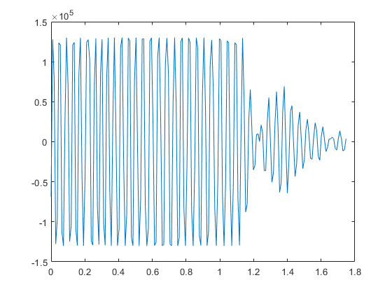
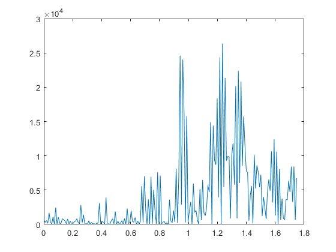
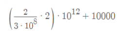

% plotMrmRetLog.m % This script prompts the user for a MRM-RET logfile, reads, parses, and % produces a "waterfall plot" of the motion filtered scans and detection lists % in the logfile clear all; close all; clc %#ok<*CLALL>
%dnm = '.'; fnm = 'MRM_002.csv';
[fnmb,dnmb] = uigetfile('*.csv');
fprintf('Reading logfile %s\n',fullfile(dnmb,fnmb));
[cfgb,reqb,scnb,det] = readMrmRetLog(fullfile(dnmb,fnmb));
[fnmt,dnmt] = uigetfile('*.csv');
fprintf('Reading logfile %s\n',fullfile(dnmt,fnmt));
[cfgt,reqt,scnt,dett] = readMrmRetLog(fullfile(dnmt,fnmt));
Reading logfile C:\Users\austinsbrown\Dropbox\ee384\lab8\distance003.csv
Reading logfile C:\Users\austinsbrown\Dropbox\ee384\lab8\1m004.csv(only motion filtered is used)
rawscansI = find([scnb.Nfilt] == 1); rawscansV_background = reshape([scnb(rawscansI).scn],[],length(rawscansI))'; rawscansI1 = find([scnt.Nfilt] == 1); rawscansV_target = reshape([scnt(rawscansI1).scn],[],length(rawscansI1))'; scan_difference = abs(rawscansV_background(1:10,:) - rawscansV_target(1:10,:));
Tbin = 32/(512*1.024); % ns
T0 = 0; % ns
c = 0.29979; % m/ns
Rbin = c*(Tbin*(0:size(scan_difference(1,:),2)-1) - T0)/2;% Range Bins in meters
rbin = 90;
%Background plot
% plot(rbin,rawscansV_background(10,:))
%Taget plot
figure; plot(Rbin,rawscansV_target(10,:))
% Difference plot
figure;plot(Rbin,scan_difference(10,:))
[a,i]=max(scan_difference(10,:));
distance=Rbin(i)
% 1+- .2 m
distance =
1.2351
 
Questions
1. The scans were always pretty close to the prediction. The best way to increase the accuracy would be to get as close to the target distance as possible. However even with this there would always be some noise due to the lab environment.
2.P = 1/(r^4) The greater the distance, the less power that you receive.
We can increase this received signal power by shortening the distance/decreasing the range.
3. The values varied as expected. The power decreased as the distance increased.
Equation for solve for Scan Stop is:

Scan Stop = 23,333ps